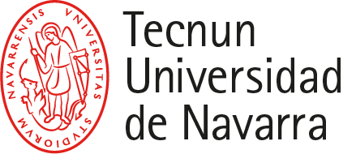

Teaching & Mentorship (2024-Present)
Teaching computer programming (MATLAB) to first-year engineering students, mentoring undergraduate thesis projects in disaster resilience, and supervising internal projects in disaster management, including data science, data collection, natural language processing, and data visualization following FAIR data principles.